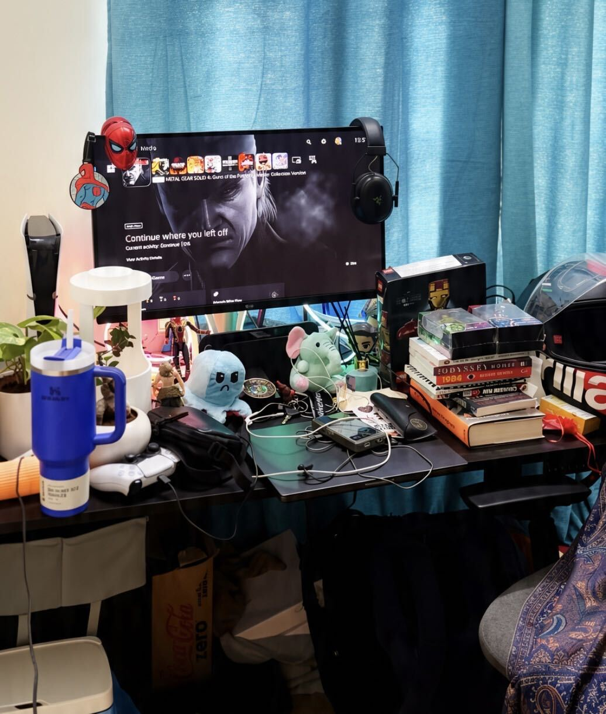
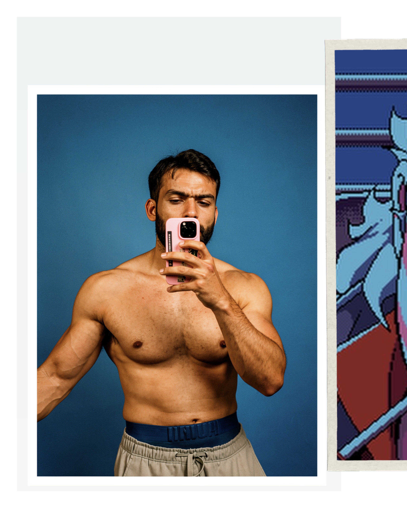
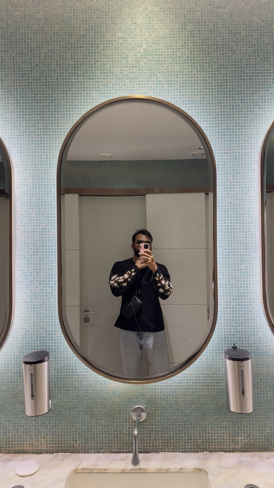

Gaming / Fitness / Lifestyle / Memes
cpucrusher when I'm gaming. taltrums4real when I'm not.
Integration engineer the whole time.
Two accounts, one guy, zero filter.
streaming · lifting · shipping Get in touch ↓
drop img/lift.mp4
Muscle-UpOne rep
Ten seconds, no cuts. The part of training that doesn't survive being turned into a photo.



I build things, I break things, I film some of it. Days go to API integrations — making systems talk to each other, and keeping them talking. Nights go to gaming, lifting, and whatever I'm currently obsessed with.
I care more about whether something feels right than whether it shipped fast. I'll redo a thumbnail eleven times. I'm aware of how that sounds.
Mostly serious. Occasionally emotional. Frequently just "bro." All three are real.